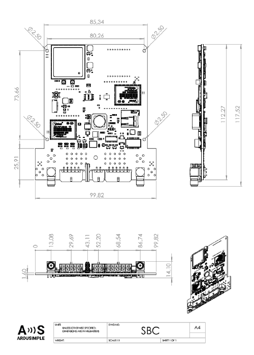
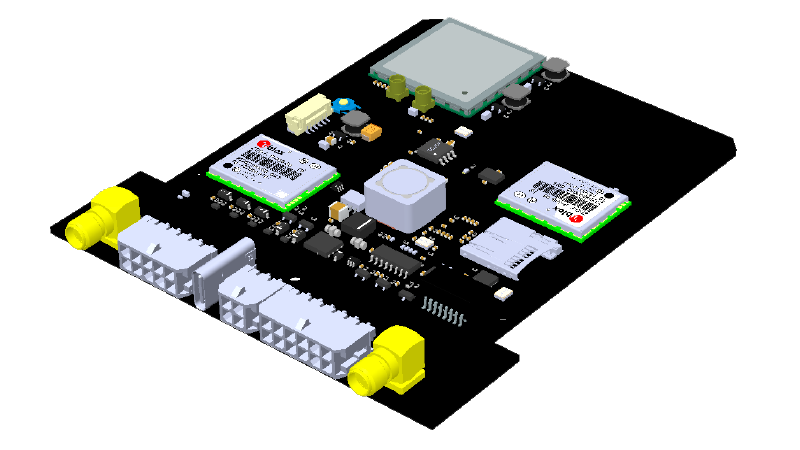
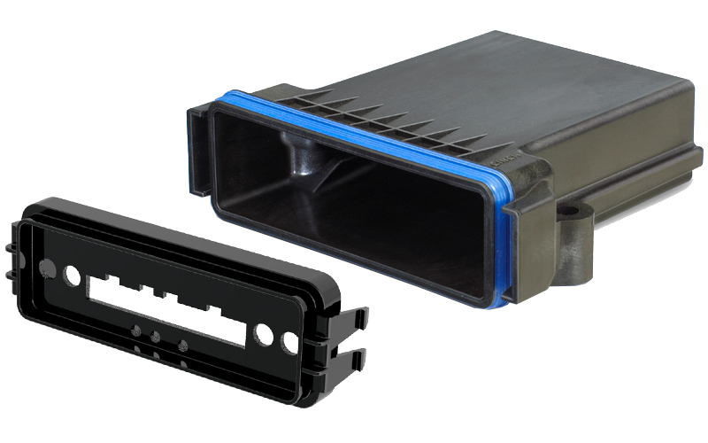
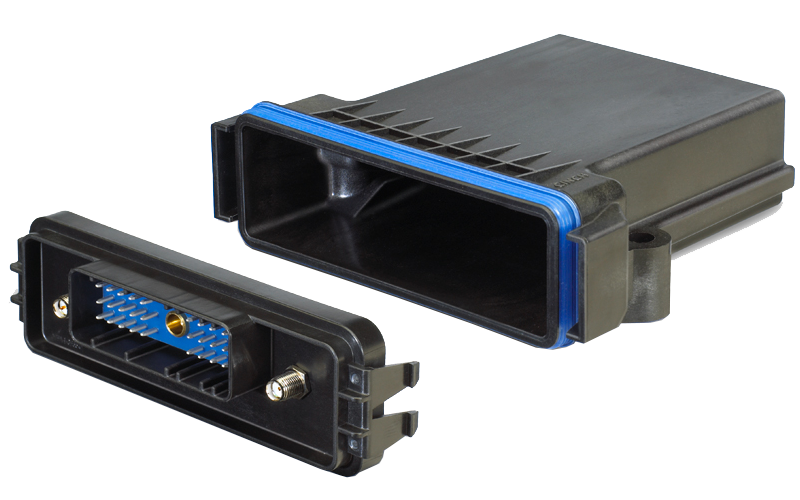
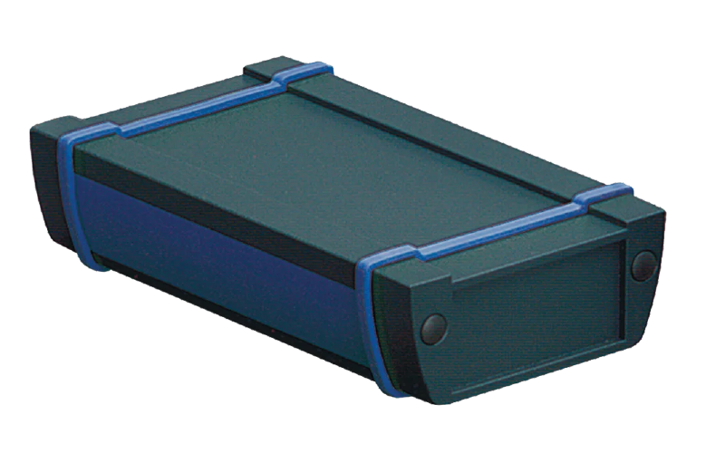

Mechanical integration#
If you need to fit the SBC into your system, please take a look at these resources:
2D drawing for generic size measurements pdf

3D model for advanced integration step

Enclosures#
If you want to speed up your integration process, we offer three enclosures with different characteristics and IP rating.
Image |
Description |
Material |
Applications |
IP rating |
|---|---|---|---|---|
 |
Standard wiring, 3 LEDs, up to 4 SMA, Front panel can be customized with legend, client logo, etc. |
Plastic |
Indoor |
IP52 |
 |
Special wiring, no LEDs, up to 2 SMA. |
Plastic |
Indoor / Outdoor |
IP67 |
 |
Front panel and wiring can be completely customized, multiple accessories available (impact protection, wall brackets, etc.). |
Aluminium |
Indoor / Outdoor |
IP68 |
Contact us for details about the enclosures and customization requests.